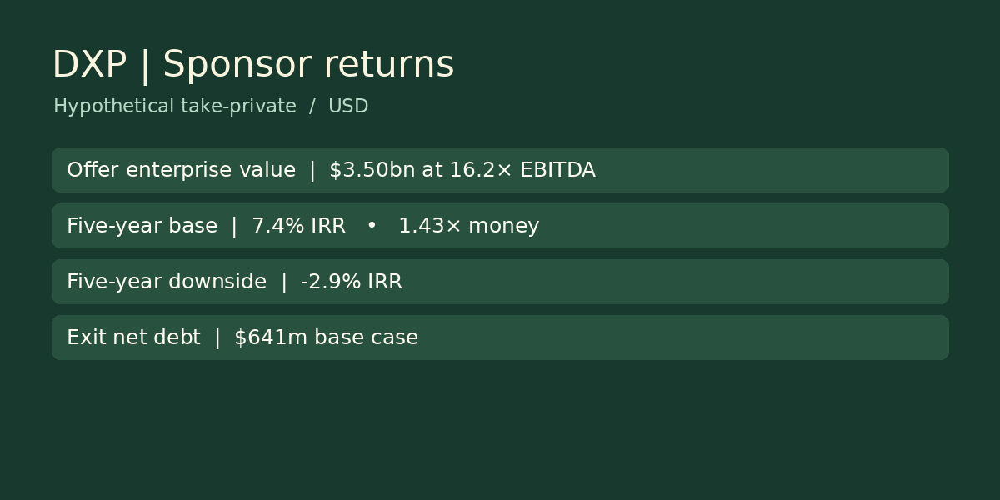

DXP Enterprises | LBO and IC memo
Pass at the modeled premium. The five-year base case returns 7.4% against a 20% hurdle.
The question
Does a premium take-private of DXP clear a sponsor hurdle? How much does downside performance change the result?
Key findings
- $215.7M FY25 normalized EBITDA.
- 1.43× base-case multiple of invested capital.
- -2.9% downside IRR under the modeled shock.
Analysis preview

Returns summary
| Metric | Base case | Downside |
|---|---|---|
| Sponsor equity | $2,627.8m | $2,627.8m |
| Exit EV | $4,388.5m | $3,045.1m |
| Exit sponsor equity | $3,747.5m | $2,268.3m |
| MOIC | 1.43× | 0.86× |
| IRR | 7.4% | -2.9% |
IRR sensitivity
| Entry / exit | 14.2× | 15.2× | 16.2× | 17.2× | 18.2× |
|---|---|---|---|---|---|
| 14.2× | 7.9% | 9.7% | 11.4% | 12.9% | 14.4% |
| 15.2× | 5.9% | 7.6% | 9.3% | 10.8% | 12.2% |
| 16.2× | 4.1% | 5.8% | 7.4% | 8.9% | 10.3% |
| 17.2× | 2.4% | 4.1% | 5.6% | 7.1% | 8.5% |
| 18.2× | 0.9% | 2.5% | 4.1% | 5.5% | 6.9% |


Method
- Reconciled five years of financials and constructed an EBITDA bridge.
- Modeled five years of operations and term loan cash sweeps.
- Cross-checked sponsor returns and reran alternative growth and leverage assumptions.
Deliverables
Assumptions and limits
- The entry premium and financing are assumptions.
- FY25 balance sheet inputs and the November market quote have different dates.
- Latest deal-day debt-like items and terms would require diligence.
What I would do next
Verify organic segment growth, refresh net debt, and seek lender indications before underwriting a bid.
Sources and attribution
Independent analysis using public information. No company affiliation or endorsement. For educational use only and provided without investment advice. All terms and valuations are hypothetical.